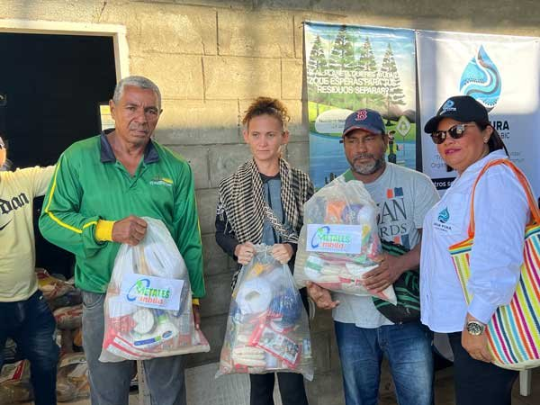
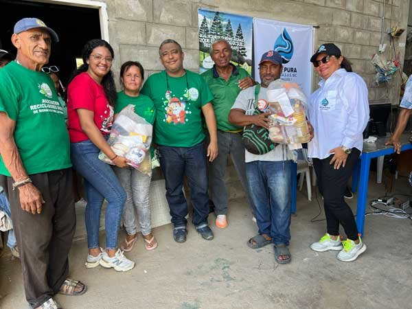
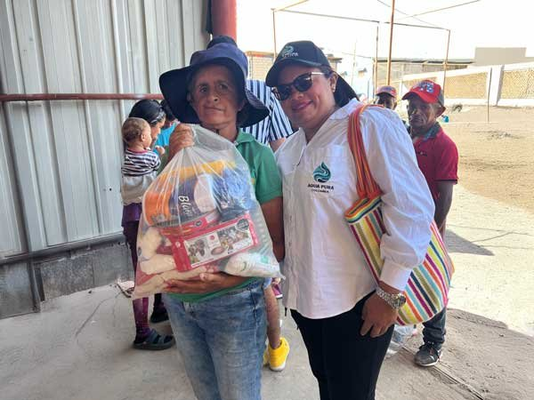
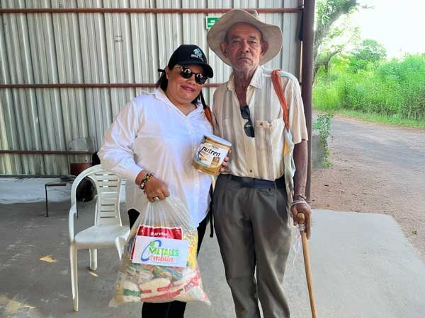
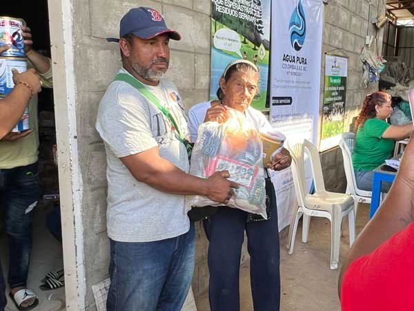

Colaboración solidaria y técnica para el desarrollo sostenible y acceso a recursos básicos en comunidades vulnerables de Riohacha.
En un esfuerzo conjunto por promover el desarrollo sostenible y mejorar la calidad de vida en comunidades vulnerables, Agua Pura S.A.S BIC, en alianza con la Asociación de Recicladores Unidos de Riohacha para la Guajira, llevó a cabo una significativa jornada de entrega de mercados en zonas rurales y periurbanas de Riohacha, La Guajira. Esta actividad solidaria marcó el inicio de una colaboración orientada a generar un impacto positivo y duradero en la región.
La jornada, organizada con el apoyo de líderes comunitarios, tuvo como objetivo principal brindar asistencia a familias en situación de vulnerabilidad, especialmente aquellas afectadas por la sequía y la falta de acceso a recursos básicos. Se distribuyeron mercados con alimentos no perecederos y agua potable, priorizando hogares con niños, adultos mayores y personas en condiciones críticas.

Además de la entrega de insumos básicos indispensables, la actividad incluyó espacios de formación técnica y de construcción de comunidad:
«En momentos de dificultad, estos apoyos significan un verdadero alivio. Agradecemos a Agua Pura S.A.S BIC y a la Asociación de Recicladores Unidos de Riohacha para la Guajira por su compromiso y por llegar directamente a quienes más lo necesitamos.»
— Representante comunitaria local
Por su parte, el equipo coordinador de Agua Pura S.A.S BIC destacó durante el evento:
«Como empresa BIC, nuestro propósito va más allá de lo comercial. Buscamos ser aliados estratégicos para las comunidades, aportando soluciones concretas y sostenibles en el tiempo que realmente transformen su relación con el recurso hídrico.»


Más allá de mitigar necesidades inmediatas, esta alianza busca sentar las bases para proyectos de mayor alcance en el futuro. Durante el transcurso de las actividades, Agua Pura S.A.S BIC y la Asociación de Recicladores Unidos de Riohacha para la Guajira delinearon las bases para explorar la implementación de soluciones hídricas sostenibles adaptadas a las difíciles condiciones climáticas de la región.
Entre los planes futuros se encuentra el diseño de sistemas de captación de agua de lluvia y la aplicación de tecnologías de purificación de bajo costo energético. Esta iniciativa refleja el compromiso de ambas organizaciones con la construcción de un futuro más justo, resiliente y sostenible para La Guajira, demostrando que las alianzas estratégicas pueden ser el motor de un verdadero cambio en las comunidades.


En AguaPura Colombia, estamos redefiniendo el futuro del medio ambiente. Nuestro compromiso con la remediación sostenible es firme, y tú puedes ser parte de este cambio.
Solicitar Información